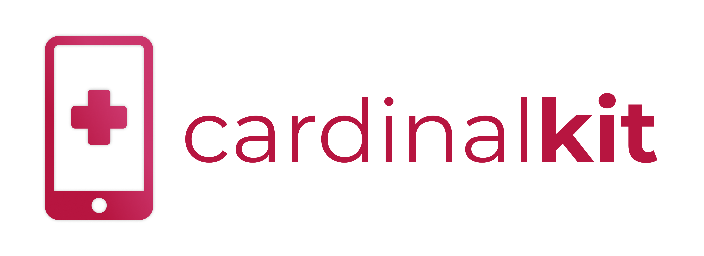

Contributing to CardinalKit
Hey! 👋
We're super excited that you want to help out with CardinalKit! We're currently a relatively small team hoping to make a big impact on the digital health community. Our technical stack is primarily composed of Swift and relies on the HealthKit and ResearchKit open source libraries. Their home pages are a great place to start gaining a better understanding of the type of problems we're trying to build for.
There is currently a feature list which we've compiled here on Github. If you have any additions you would like to make to it, please feel free to add them!
Some action times to get you started:
- First, contact us regarding what you want to build. We just want to make sure no one else is currently working on the same feature. Also, leave a comment on the issue so we know you're interested in it.
- If you already know what you want to work on, fork our CardinalKit repository and create the changes you want to see.
- If you're not sure what to work on or feel that you need some guidance, either browse our feature list and find something you're passionate about or let us know! We would be more than happy to help you find a project that matches your skill level and goals.
Everytime you submit code for review through Github, leave us a Loom so we can better understand the features and how you implemented them in a more fun and personal way!
A sample Loom
As always, if you have any questions, feel free to reach out!
The CardinalKit Team 🎉
